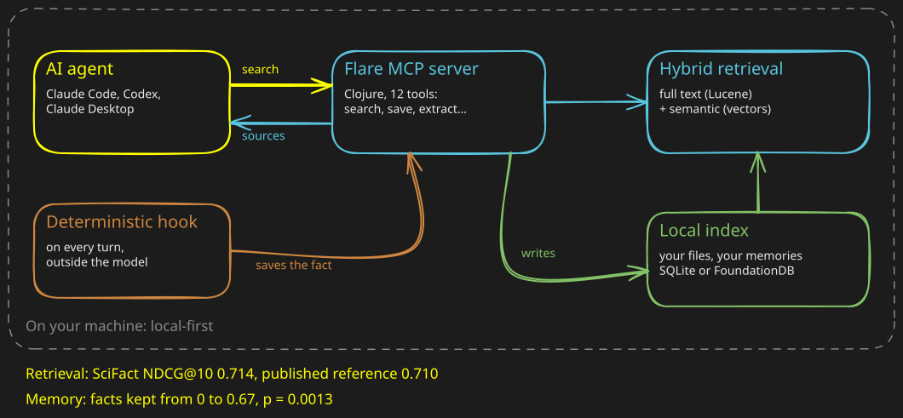

A memory for AI agents, measured before it is trusted.
Flare, a local MCP server: search, memory and tools over your own files. Pre-release.
The problem: an agent says it saved a fact, and calls no tool. What it says about itself proves nothing.
1The diagram

the agentFlarethe local indexthe hook, outside the model
2What I built
-
The MCP server: 12 tools (search, save, extract, sql…) for Claude Code, Claude Desktop and Codex.
- Clojure: 202 files, 52,000 lines; 1,264 tests.
-
Hybrid retrieval: full text and semantic, over a local index.
- SQLite or FoundationDB; GraalVM native builds.
-
The write loop: a deterministic hook triggers the save, not the model's goodwill.
- Secrets (a door code, a wifi password) are left out on purpose.
-
The benchmark suite: BEIR, the write loop, hint routing, table extraction.
3The result
-
Facts kept: from 0 to 0.67, p = 0.0013 (Fisher's test, 12 sessions per arm).
- On non-secret facts: 8 out of 8.
-
Retrieval at the published reference: SciFact NDCG@10 0.714 against 0.710; NFCorpus 0.352 against 0.353.
-
Hint routing: precision 1.000, recall 0.944, no false positives.
-
About ten ideas rejected, with numbers: cross-encoder rerank (SciFact −0.021, then −0.224), another embedder, INT8.
- Biggest win: a fixed PQ threshold, +0.14 on SciFact dense.
4My role
-
My project: about 18 months of work since March 2025, alongside my contracts.
- Pre-release: no signed release yet.